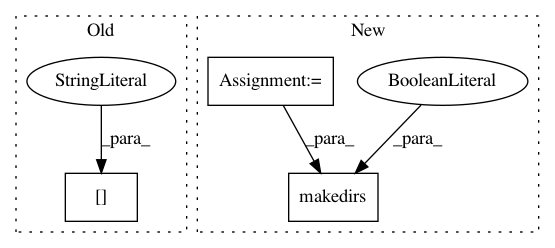

4941ef9a9d7f30957b343486bb3f164b0fa3a900,entity2rec/optimize_hyper_params.py,,,#,7
Before Change
hyper_opt_write.write("%.2f,%.2f,%d,%d,%d,%d" % (p, q, c, d, walks, length))
for name, score in scores[0:-1]:
hyper_opt_write.write("%f," % score)
hyper_opt_write.write("%f\n" % scores[-1][1])
After Change
print("--- %s seconds ---" % (time.time() - start_time))
path = "results/%s/entity2rec/" % args.dataset
os.makedirs(path, exist_ok=True)
with open(path+"hyper_params_opt.csv", "w") as hyper_opt_write:
hyper_opt_write.write("p,q,c,d,walks,length,P@5,P@10,MAP,R@5,R@10,NDCG,MRR,SER@5,SER@10\n")
In pattern: SUPERPATTERN
Frequency: 3
Non-data size: 3
Instances
Project Name: D2KLab/entity2rec
Commit Name: 4941ef9a9d7f30957b343486bb3f164b0fa3a900
Time: 2018-08-01
Author: enricopalumbo0@gmail.com
File Name: entity2rec/optimize_hyper_params.py
Class Name:
Method Name:
Project Name: interactiveaudiolab/nussl
Commit Name: ceb4e40c074d2f0d0bde8e97c7b4493971281a9b
Time: 2020-05-14
Author: abugler@gmail.com
File Name: tests/core/test_augmentation.py
Class Name:
Method Name:
Project Name: interactiveaudiolab/nussl
Commit Name: 889a295c5c4e0c1cf344e49f2020917a410f64d1
Time: 2020-05-03
Author: abugler@gmail.com
File Name: tests/core/test_augmentation.py
Class Name:
Method Name: